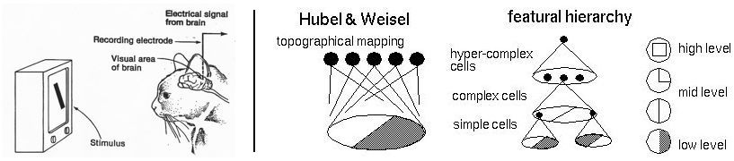
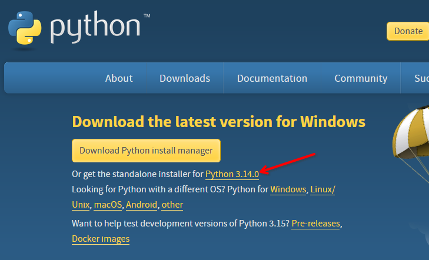
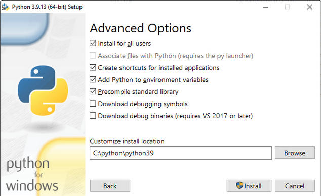
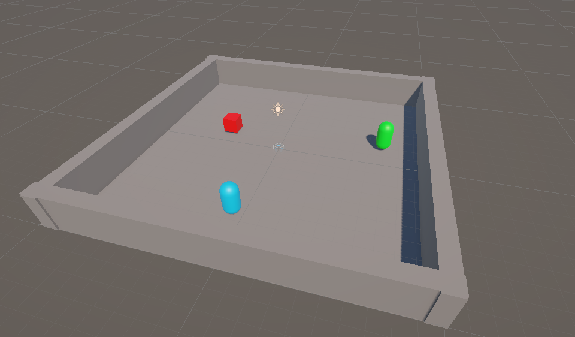

2.5 Machine Learning
El Machine Learning (aprenentatge automàtic) és una branca de la intel·ligència artificial que se centra en el desenvolupament d'algorismes i models que permeten als ordinadors aprendre a partir de dades i millorar el seu rendiment en tasques específiques sense ser explícitament programats per a cada tasca.
Història del Machine Learning
Tot va començar als anys 50 quan els investigadors Hubel i Wiesel van descobrir com les neurones del cervell responen a estímuls visuals.

Van connectar electrodes al cervell de gats i van observar que certes neurones s'activaven quan es mostraven línies verticals, horitzontals i diagonals. Van descobrir que aquestes neurones estaven organitzades en capes i que cada capa processava diferents aspectes de la informació visual.

Aquesta descoberta va inspirar la idea de crear xarxes neuronals artificials que imiten el funcionament del cervell humà.
Evolució històrica
- 1950s-1960s: Desenvolupament dels primers models de xarxes neuronals artificials, com el perceptró multicapa (MLP).

- 1989-1998: Naixement de les xarxes neuronals convolucionals (CNNs) per a la visió per computador.

- 2012: Avanços en deep learning amb xarxes neuronals profundes. La diferència entre MLP i Deep Learning es troba en la profunditat i complexitat de les xarxes neuronals utilitzades: els MLP tenien 2-3 capes ocultes mentres que les xarxes de Deep Learning poden tenir desenes o centenars de capes ocultes.
- 2014: Introducció de les xarxes generatives adversàries (GANs). També s'aplica aprenentatge per reforç junt amb Deep Learning per a tasques com jugar a videojocs.
- 2017: Desenvolupament dels transformers per al processament del llenguatge natural (NLP). Comença l'era dels grans models de llenguatge (LLMs) com GPT.

Unity ML-Agents i PyTorch
Per a implementar Machine Learning en videojocs, una de les eines més utilitzades és Unity ML-Agents, un kit de desenvolupament que permet als desenvolupadors integrar agents d'aprenentatge automàtic en els seus jocs creats amb Unity.
PyTorch és una biblioteca de Python de codi obert per a l'aprenentatge automàtic que proporciona una plataforma flexible i eficient per a la creació i entrenament de models de Machine Learning. És àmpliament utilitzada en la investigació i desenvolupament de models d'aprenentatge profund.
Instal·lació de PyTorch
Abans d'instal·lar PyTorch, has d'instal·lar Python:

Durant el procés d'instal·lació, assegurat d'instalar pip, el gestor de paquets de Python, i de marcar l'opció d'instal·lar Python per a tots els usuaris.


Per a comprovar que Python i pip s'han instal·lat correctament, obre una terminal (CMD o PowerShell a Windows) i escriu:
1 2 | |
pip
pip és el gestor de paquets de Python que permet instal·lar i gestionar biblioteques i dependències addicionals que no formen part de la biblioteca estàndard de Python.
El següent pas és la creació d'un entorn virtual per a aïllar les dependències del projecte. Per tal de gestionar millor els entorns virtuals, usarem Conda. Instal·la Anaconda des de la seva pàgina oficial.
Obre un terminal d'Anaconda i crea un entorn virtual amb el següent comandament:
1 | |
Cada vegada que vullgues treballar en aquest entorn, hauràs d'activar-lo amb:
1 | |
Amb l'entorn virtual activat, instal·la ML-Agents amb el següent comandament:
1 | |
Això també instal·larà totes les dependències necessàries, incloent PyTorch.
A continuació, instal·la les següents dependències addicionals que són requerides per ML-Agents:
1 2 3 | |
Atenció
Assegura't d'instal·lar les versions específiques indicades per evitar problemes de compatibilitat.
Per a verificar que la instal·lació s'ha realitzat correctament, pots executar el següent comandament per a comprovar la versió de ML-Agents:
1 | |
Creació del projecte a Unity
Obre Unity Hub i crea un nou projecte 3D.
Afegeix el paquet ML-Agents al projecte mitjançant el Package Manager. Afegeix també ProBuilder per a fer l'escenari.
Per a construir l'escenari, fes un pla senzill i delimita'l amb 4 parets. Afegeix una càpsula que serà l'agent que aprendrà a moure's per l'escenari, una altra càpsula que serà l'objectiu i un cub que serà un obstacle.
